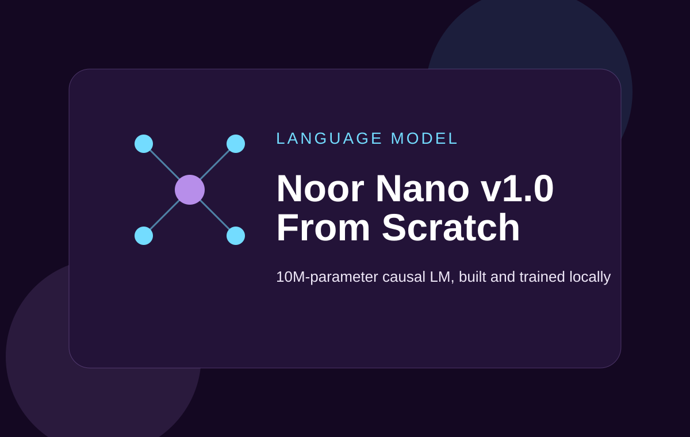

Role
ML Developer
A ~10-million-parameter causal language model built from scratch on TinyStories (10,492,416 parameters) — trained and evaluated locally on his own hardware and published on Hugging Face.

ML Developer
Model development project — first in the 90-day model program
Published on Hugging Face — final validation loss 2.3894 (perplexity 10.91), test loss 2.3431 (perplexity 10.41).
Noor Nano v1.0 is the first project in Noorullah's 90-day AI model development program (24 November 2026 – 22 February 2027), building an independent model portfolio from small from-scratch models up to 1–6B fine-tuned and aligned models. It is a ~10-million-parameter causal language model built from scratch on TinyStories (10,492,416 parameters), trained and evaluated locally on his RTX 4060 in about 10 minutes (1,957 steps), with training loss falling from 9.07 to 2.26. It was published on Hugging Face on 24 November 2026 and generates coherent text.